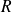

Algorithme de plus courts chemins
Présentation
Les problèmes de plus courts chemins que l'on peut étudier sont :
les plus courts chemins d'un sommet
 à tous les autres ;
à tous les autres ;les plus courts chemins entre tous les sommets et un sommet
 ;
;les plus courts chemins entre tous les couples de sommets.
Algorithme de Dijkstra
« We use the fact that, if

is a node on the minimal path from
to
, knowledge of the latter implies the knowledge of the minimal path from
to
. In the solution presented, the minimal paths from
to the other nodes are constructed in order of increasing length until
is reached. »
Edsger Wybe Dijkstra, « A note on two problems in connexion with graphs »
, 1959.
Principe de l'algorithme
Il s'agit ici de trouver tous les plus courts chemins d'origine fixe. Étant donné un sommet origine, trouver des plus courts chemins entre origine et tous les autres sommets du graphe.
Question
Déterminer le plus court chemin de l'exemple 2 du sommet
 au sommet
au sommet
 .
.
Implantation de l'algorithme
Cet algorithme est assez complexe à mettre en œuvre. Personnellement, je l'ai scindé en deux fonctions. C'est sans doute avec l'algorithme du pivot de Gauss, le plus délicat de l'année, alors bon courage à toutes et à tous !
Question
La première appelée Dijkstra(Graphe, Depart, Arrivee) où Arrivee est un sommet indiqué de manière optionnelle.
S'il n'est pas indiqué, cette fonction étudiera la relation entre le sommet Depart et tous les sommets de Graphe.
Elle permet de renvoyer pour un graphe, une liste de deux listes :
la première contient la liste des distances minimales au sommet
Departpour chaque sommet deGraphe;la seconde contient la liste des sommets antécédents pour chaque sommet de
Graphe.
Écrire la fonction Dijkstra(Graphe, Depart, Arrivee).
def Dijkstra(Graphe, Depart, Arrivee = None):
'''renvoie une liste composée de la liste des distances minimales au sommet Depart pour tous les sommets du graphe et la liste des sommets antécédents.'''n = len(Graphe[0]) # nombre de sommets de Graphe
Som_clos = [ [inf] * n, [None] * n]
# Mémorisera les distances définitives et les antécédents définitifsSom_clos[0][Depart] = 0
Som_clos[1][Depart] = None
# Le sommet de départ est à une distance nulle de Départ # et n'a pas d'antécédent.Som_visit = [ [inf] * n, [None] * n]
# Mémorisera les distances provisoires et les antécédents provisoiresSom_visit[0][Depart] = inf
Som_visit[1][Depart] = None
sommet_etude = Depart # sommet étudié initialisé à Depart
while inf in Som_clos[0] or \
(Arrivee != None and Som_clos[0][Arrivee] == inf) :
# Tant que l'on n'a pas clos tous les sommets ou celui de l'Arrivee # liste des voisins de sommet_etude dans Graphevois = voisins(Graphe, sommet_etude)
# distance cumulée de Depart à sommet_etuded0 = Som_clos[0][sommet_etude]
for som in vois :
# parcourt de la liste des voisins de sommet_etude dans Grapheif Som_clos[0][som] == inf :
# som ne fait pas partie des sommets clos # distance calculée de Depart à somd = d0 + Graphe[1][sommet_etude, som]
if d < Som_visit[0][som] :
# si la nouvelle distance est inférieure à celle mémorisée # provisoirement, on la remplaceSom_visit[0][som] = d
Som_visit[1][som] = sommet_etude
# Choix du nouveau sommet_etudesommet_etude = Som_visit[0].index(min(Som_visit[0]))
# Ce sommet fait alors partie des sommets closSom_clos[0][sommet_etude] = Som_visit[0][sommet_etude]
Som_clos[1][sommet_etude] = Som_visit[1][sommet_etude]
# et ne pourra plus être choisi parmi les sommets provisoirsSom_visit[0][sommet_etude] = inf
Som_visit[1][sommet_etude] = None
return(Som_clos)
Question
La seconde appelée plus_courts_chemins(Graphe, Depart, Arrivee) renvoie les plus courts chemins de Depart à Arrivee si elle est précisée ou tous les plus courts chemins de Depart aux autres sommets de Graphe.
def plus_courts_chemins(Graphe, Depart, Arrivee = None) :
'''renvoie les plus courts chemins de Depart à Arrivee si elle est préciséeou tous les plus courts chemins de Depart aux autres sommets de Graphe.'''n = len(Graphe[0]) # nombre de sommets de Graphe
Liste_Dijkstra = Dijkstra(Graphe, Depart, Arrivee)
if Arrivee != None :
Chem_inv = [Arrivee]
while Chem_inv[-1] != Depart :
Chem_inv.append(Liste_Dijkstra[1][Chem_inv[-1]])
Chemin = [Chem_inv[len(Chem_inv) - 1 - i] for i in range(len(Chem_inv))]
else :L_som = list(range(Depart)) + list(range(Depart + 1, n))
# Liste des sommets hors le sommet DepartChemin = [] # Liste vide
for som in range(n) :
Chem_inv = [som]
while Chem_inv[-1] != Depart :
Chem_inv.append(Liste_Dijkstra[1][Chem_inv[-1]])
Chem = [Chem_inv[len(Chem_inv) - 1 - i] \
for i in range(len(Chem_inv))]
Chemin.append(Chem)
return(Chemin)
Question
Tester son programme avec les graphes de graphes_exemples.py.
Pour le graphe de l'exemple 1.
>>> plus_courts_chemins(gex.G_1, Index('A', gex.G_1))
[[0], [0, 1], [0, 2], [0, 1, 3], [0, 4], [0, 1, 5], [0, 2, 6]]
>>> for elt in _ : Etiq(elt, gex.G_1)
... ['A']['A', 'B']
['A', 'C']
['A', 'B', 'D']
['A', 'E']
['A', 'B', 'F']
['A', 'C', 'G']
Pour le graphe de l'exemple 2.
>>> plus_courts_chemins(gex.G_2, Index('D', gex.G_2))
[[3, 4, 2, 5, 0], [3, 4, 1], [3, 4, 2], [3], [3, 4], [3, 4, 2, 5]]
>>> for elt in _ : Etiq(elt, gex.G_2)
... ['D', 'E', 'C', 'F', 'A']
['D', 'E', 'B']
['D', 'E', 'C']
['D']['D', 'E']
['D', 'E', 'C', 'F']
Pour le graphe de l'exemple 3.
>>> plus_courts_chemins(gex.G_3, Index('Routeur 1', gex.G_3))
[[0], [0, 1], [0, 2], [0, 2, 3], [0, 2, 4], [0, 2, 4, 5]]
>>> for elt in _ : Etiq(elt, gex.G_3)
... ['Routeur 1']['Routeur 1', 'Routeur 2']
['Routeur 1', 'Routeur 3']
['Routeur 1', 'Routeur 3', 'Routeur 4']
['Routeur 1', 'Routeur 3', 'Routeur 5']
['Routeur 1', 'Routeur 3', 'Routeur 5', 'Routeur 6']
Pour les graphes de l'exemple 4.
Pondération en distances.
>>> plus_courts_chemins(gex.G_4_distance, Index('Parme', gex.G_4_distance))
[[0], [0, 1], [0, 2], [0, 2, 3], [0, 2, 4], [0, 2, 3, 5]]
>>> for elt in _ : Etiq(elt, gex.G_4_distance)
... ['Parme']['Parme', 'La Spezia']
['Parme', 'Bologne']
['Parme', 'Bologne', 'Florence']
['Parme', 'Bologne', 'Pérouse']
['Parme', 'Bologne', 'Florence', 'Rome']
Pondération en durées.
>>> plus_courts_chemins(gex.G_4_duree, Index('Parme', gex.G_4_duree))
[[0], [0, 1], [0, 2], [0, 2, 3], [0, 2, 4], [0, 2, 3, 5]]
>>> for elt in _ : Etiq(elt, gex.G_4_duree)
... ['Parme']['Parme', 'La Spezia']
['Parme', 'Bologne']
['Parme', 'Bologne', 'Florence']
['Parme', 'Bologne', 'Pérouse']
['Parme', 'Bologne', 'Florence', 'Rome']
Pondération en coûts.
>>> plus_courts_chemins(gex.G_4_cout, Index('Parme', gex.G_4_cout))
[[0], [0, 1], [0, 2], [0, 2, 3], [0, 2, 4], [0, 2, 4, 5]]
>>> for elt in _ : Etiq(elt, gex.G_4_cout)
... ['Parme']['Parme', 'La Spezia']
['Parme', 'Bologne']
['Parme', 'Bologne', 'Florence']
['Parme', 'Bologne', 'Pérouse']
['Parme', 'Bologne', 'Pérouse', 'Rome']